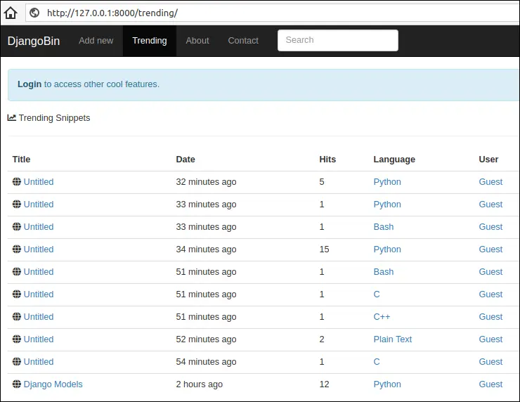
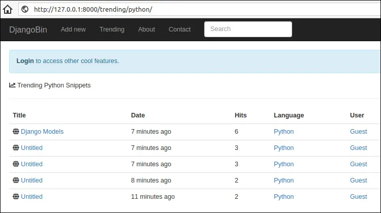

Creating Trending Snippet Page
Last updated on July 27, 2020
Our next task is to display a list of snippets page based on the number of hits a snippet has received. We want to display a list of trending snippets across all languages at URL path /trending/ and snippets from a particular language at URL path /trending/<language_slug>/.
Let's start by modifying trending_snippets view function in views.py file as follows:
djangobin/django_project/djangobin/views.py
1 2 3 4 5 6 7 8 9 10 11 12 13 14 15 16 17 | #...
def raw_snippet(request, snippet_slug):
#...
def trending_snippets(request, language_slug=''):
lang = None
snippets = Snippet.objects
if language_slug:
snippets = snippets.filter(language__slug=language_slug)
lang = get_object_or_404(Language, slug=language_slug)
snippets = snippets.all()
return render(request, 'djangobin/trending.html', {'snippets': snippets, 'lang': lang})
def tag_list(request, tag):
#...
|
Create trending.html template in djangobin app's templates directory with the following code:
djangobin/django_project/djangobin/templates/djangobin/trending.html
1 2 3 4 5 6 7 8 9 10 11 12 13 14 15 16 17 18 19 20 21 22 23 24 25 26 27 28 29 30 31 32 33 34 35 36 37 38 39 40 41 42 43 44 45 46 47 48 49 50 51 | {% extends 'djangobin/base.html' %}
{% load static %}
{% load humanize %}
{% block title %}
Trending {{ lang.name }} Snippets - {{ block.super }}
{% endblock %}
{% block main %}
<h5><i class="fas fa-chart-line"></i> Trending {{ lang.name }} Snippets</h5>
<hr>
<table class="table">
<thead>
<tr>
<th>Title</th>
<th>Date</th>
<th>Hits</th>
<th>Language</th>
<th>User</th>
</tr>
</thead>
<tbody>
{% for snippet in snippets %}
<tr>
<td><i class="fas fa-globe"></i>
<a href="{{ snippet.get_absolute_url }}">{{ snippet.title }}</a>
</td>
<td title="{{ snippet.created_on }}">{{ snippet.created_on|naturaltime }}</td>
<td>{{ snippet.hits }}</td>
<td><a href="{% url 'djangobin:trending_snippets' snippet.language.slug %}">{{ snippet.language }}</a></td>
{% if not snippet.user.profile.private %}
<td><a href="{{ snippet.user.profile.get_absolute_url }}">{{ snippet.user.username|title }}</a></td>
{% else %}
<td>-</td>
{% endif %}
</tr>
{% empty %}
<tr class="text-center">
<td colspan="4">There are no snippets.</td>
</tr>
{% endfor %}
</tbody>
</table>
{% endblock %}
|
Here are few things to notice:
In lines 27-46, we use a {% for %} tag to loop over the snippet list.
In lines 29-34, we display snippet title, creation time, hits and language name.
In lines 35-39, we check whether the snippet creator profile is private or not. If the profile is not private, we display the username and along with a link to the user profile page. On the other hand, if the profile is private we display a - (dash) in the User column.
Next, update djangobin app's base.html template to include a link to trending snippet page:
djangobin/django_project/djangobin/templates/djangobin/base.html
1 2 3 4 5 6 7 8 9 10 11 12 13 14 15 16 | {# ... #}
<ul class="nav navbar-nav">
<li {% if request.path == '/' %}class='active'{% endif %} >
<a href="{% url 'djangobin:index' %}">Add new</a>
</li>
<li {% if request.path == '/trending/' %}class='active'{% endif %}>
<a href="{% url 'djangobin:trending_snippets' %}">Trending<span class="sr-only">(current)</span></a>
</li>
<li {% if request.path == '/about/' %}class='active'{% endif %}>
<a href="">About</a>
</li>
<li {% if request.path == '/contact/' %}class='active'{% endif %}>
<a href="">Contact</a>
</li>
</ul>
{# ... #}
|
Likewise, to display trending snippets from a particular language add a link to snippet_detail.html template as follows:
djangobin/django_project/djangobin/templates/djangobin/snippet_detail.html
1 2 3 4 5 6 7 8 9 10 11 12 13 14 15 16 | {# ... #}
<div class="codeblock">
<div class="toolbar clearfix">
<span class="at-left"><a href="{% url 'djangobin:trending_snippets' snippet.language.slug %}">{{ snippet.language }}</a></span>
<span class="at-right">
<a onclick="return confirm('Sure you want to delete this paste? ')" href="">delete</a>
<a href="{% url 'djangobin:raw_snippet' snippet.slug %}">raw</a>
<a href="{% url 'djangobin:download_snippet' snippet.slug %}">download</a>
</span>
</div>
<div class="code-wrapper">{{ snippet.highlighted_code|safe }}</div>
</div>
{% endblock %}
{# ... #}
|
Navigate your browser to http://127.0.0.1:8000/trending/. You will see a list of trending snippets across all the languages.

To view trending snippets from a particular language click on the language name in the Language column.
Another way to view trending snippets from a particular language is to click on the language name in the snippet detail page.

Either way, you will end up with a list of snippets from a particular language like this:

Pagination Basics #
Let's assume for the moment that our site became very popular and started receiving millions of visits every day.
Suddenly we will have a problem!
As things stand, we are displaying all snippets at once in trending snippets page. This will not only increase the page size but will also degrade the user experience. The user will have to wade through the snippet list to find out what they are looking for.
The solution is to use pagination and break a long list into multiple pages.
Django provides a class named Paginator which allows us to create paginated records. To use it, import it from django.core.paginator module.
from django.core.paginator import Paginator
To use pagination we, have to create a Paginator object first. The Paginator constructor has the following syntax:
paginator_object = Paginator(object_list, records_per_page)
The object_list can be a tuple, list, queryset etc. The records_per_page is a number of records you want to show on each page.
Here is the code to create a Paginator object to show 5 snippets per page:
paginator = Paginator(Snippet.objects.all(), 5)
The Paginator object has the following attributes and methods, which are frequently used while creating paginated records.
| Attribute/Method | Description |
|---|---|
count |
The count attribute returns the total number of records, across all the pages. |
num_pages |
The num_pages attribute returns total number of pages. |
page(number) |
The page() method accepts a page number and returns a Page instance for that page. We use Page instance to access records in a page. If the argument is not a number, then it throws PageNotAnInteger exception. If the page specified doesn't exist it throws an EmptyPage exception. |
The Page object also provides some useful attributes and methods.
| Attribute/Method | Description |
|---|---|
object_list |
a list of objects in this page. |
number |
1 based numeric count of the current page. |
has_next() |
returns True if there is next page. Otherwise False. |
has_previous() |
returns True if there is previous page. Otherwise False. |
next_page_number() |
returns next page number. If next page doesn't exists it throws a django.core.paginator.InvalidPage exception |
previous_page_number() |
returns previous page number. If previous page doesn't exists it throws a django.core.paginator.InvalidPage exception |
paginator |
This attribute returns the Paginated object attached to the Page object. |
Open Django shell and let's try some of the things we have learned so far:
1 2 3 4 5 6 7 8 9 10 11 12 13 14 15 | >>>
>>> from django.core.paginator import Paginator
>>> from djangobin.models import *
>>>
>>> p = Paginator(Snippet.objects.all(), 3) # Creating a Paginator object to show 3 snippet per page
>>>
>>> type(p)
<class 'django.core.paginator.Paginator'>
>>>
>>> p.count # total number of records across all the pages
10
>>>
>>> p.num_pages # total number of pages
4
>>>
|
Get the records for the first page:
1 2 3 4 5 6 7 8 9 10 11 12 13 14 15 16 17 18 19 20 21 22 23 24 25 26 27 28 29 | >>>
>>> page1 = p.page(1) # creating Page object for the first page.
>>>>
>>> page1
<Page 1 of 4>
>>>
>>> type(page1)
<class 'django.core.paginator.Page'>
>>>
>>> page1.object_list # get a list of posts for the first page.
<QuerySet [<Snippet: Untitled - Python>, <Snippet: Untitled - Python>, <Snippet: Untitled - Bash>]>
>>>
>>> page1.number
1
>>>
>>> page1.has_previous()
False
>>>
>>> page1.has_next()
True
>>>
>>> page1.next_page_number()
2
>>>
>>> page1.previous_page_number()
...
django.core.paginator.EmptyPage: That page number is less than 1
>>>
Traceback (most recent call last):
|
To access the Paginator object use the paginator attribute:
1 2 3 4 | >>>
>>> page1.paginator
<django.core.paginator.Paginator object at 0x0000000004331550>
>>>
|
The page1.paginator and p point to the same object:
1 2 3 4 | >>>
>>> page1.paginator == p
True
>>>
|
Once we have access to Paginator object we can access it's attributes and methods too.
1 2 3 4 | >>>
>>> page1.paginator.num_pages
4
>>>
|
Similarly, we can access the records for the second page:
1 2 3 4 5 6 7 8 9 10 11 12 13 14 15 16 17 18 19 20 21 22 23 24 25 26 27 28 29 30 31 | >>>
>>> page2 = p.page('2') # creating Page object for the second page.
>>> # notice that we are passing a string with integer value
>>>
>>> page2.object_list
<QuerySet [<Snippet: Untitled - Python>, <Snippet: Untitled - Bash>, <Snippet: Untitled - C>]>
>>>
>>> page2.number
2
>>>
>>> page2.has_previous()
True
>>>
>>> page2.has_next()
True
>>>
>>> page2.previous_page_number()
1
>>>
>>> page2.next_page_number()
3
>>>
>>> pagea = p.page('a') # Here we are passing string with a non integer value.
....
django.core.paginator.PageNotAnInteger: That page number is not an integer
>>>
>>>
>>> page100 = p.page(100) # Trying to access records for 100th page
...
django.core.paginator.EmptyPage: That page contains no results
>>>
|
I hope you get the idea here.
Once we have access to the Page object, we can use it in our template to loop over each item in the page. Consider the following code:
1 2 3 4 5 6 7 8 9 10 11 12 13 14 15 | >>>
>>>
>>> p = Paginator(Snippet.objects.all(), 3)
>>>
>>> page1 = p.page(1)
>>>
>>> from django import template
>>>
>>> t = template.Template("{% for s in snippets %}<p>{{s}}</p>{% endfor %}")
>>>
>>> c = template.Context({'snippets': page1 })
>>>
>>> t.render(c)
'<p>Untitled - Python</p><p>Untitled - Python</p><p>Untitled - Bash</p>'
>>>
|
So all we need to do to use pagination is to pass the Page object as context variable to the template. That's it. We don't need to modify our {% for %} tag to use the Page object in anyway.
Adding Pagination to Trending Snippet Page #
Our goal here is to paginate snippet list using the following URL pattern:
/trending/?page=<page_numer>
Similarly, to paginate snippet list for a particular language we will use the following URL pattern.
/trending/<language_slug>/?page=<page_numer>
Open views.py and modify trending_snippets() view function as follows:
djangobin/django_project/djangobin/views.py
1 2 3 4 5 6 7 8 9 10 11 12 13 14 15 16 17 18 19 20 21 22 23 24 25 26 27 28 29 30 31 32 | #...
from django.core.paginator import Paginator, PageNotAnInteger, EmptyPage
from .forms import SnippetForm
from .models import Language, Snippet
#...
def trending_snippets(request, language_slug=''):
lang = None
snippets = Snippet.objects
if language_slug:
snippets = snippets.filter(language__slug=language_slug)
lang = get_object_or_404(Language, slug=language_slug)
snippets = snippets.all()
paginator = Paginator(snippets, 5)
# get the page parameter from the query string
# if page parameter is available get() method will return empty string ''
page = request.GET.get('page')
try:
# create Page object for the given page
posts = paginator.page(page)
except PageNotAnInteger:
# if page parameter in the query string is not available, return the first page
snippets = paginator.page(1)
except EmptyPage:
# if the value of the page parameter exceeds num_pages then return the last page
snippets = paginator.page(paginator.num_pages)
return render(request, 'djangobin/trending.html', {'snippets': snippets, 'lang': lang})
|
The code for creating paginated records (from line 16 to 30) will be same all across the views. Rather than copying and pasting the same code over and over again, we can assign the task to a function.
In the utils.py file add paginate_records() function towards the end of the file as follows:
djangobin/django_project/djangobin/utils.py
1 2 3 4 5 6 7 8 9 10 11 12 13 14 15 16 17 18 19 20 21 22 23 | from django.contrib.auth.models import User
from django.core.paginator import Paginator, InvalidPage, EmptyPage, PageNotAnInteger
def get_current_user(request):
#...
def paginate_result(request, object_list, item_per_page):
paginator = Paginator(object_list, item_per_page)
page = request.GET.get('page')
try:
results = paginator.page(page)
except PageNotAnInteger:
# If page is not an integer, deliver first page.
results = paginator.page(1)
except EmptyPage:
# If page is out of range (e.g. 9999), deliver last page of results.
results = paginator.page(paginator.num_pages)
return results
|
Then, update trending_snippets() view in views.py to use paginate_result() function as follows:
djangobin/django_project/djangobin/views.py
1 2 3 4 5 6 7 8 9 10 11 12 13 14 15 16 17 18 19 20 | from django.shortcuts import (HttpResponse, render, redirect,
get_object_or_404, reverse, get_list_or_404)
#...
from .forms import SnippetForm
from .utils import paginate_result
#...
def trending_snippets(request, language_slug=''):
lang = None
snippets = Snippet.objects
if language_slug:
snippets = snippets.filter(language__slug=language_slug)
lang = get_object_or_404(Language, slug=language_slug)
snippet_list = get_list_or_404(snippets.filter(exposure='public').order_by('-hits'))
snippets = paginate_result(request, snippet_list, 5)
return render(request, 'djangobin/trending.html', {'snippets': snippets, 'lang': lang})
|
Next, add pagination links to trending_snippets.html by adding the following code just after the closing <table> tag.
djangobin/django_project/djangobin/templates/djangobin/trending.html
1 2 3 4 5 6 7 8 9 10 11 12 13 14 15 16 17 18 19 20 21 22 23 24 25 26 27 28 29 | {# ... #}
</tr>
{% empty %}
<tr class="text-center">
<td colspan="4">There are no snippets.</td>
</tr>
{% endfor %}
</tbody>
</table>
{% if snippets.paginator.num_pages > 1 %}
<nav aria-label="...">
<ul class="pager">
<li>Page {{ snippets.number }} of {{ snippets.paginator.num_pages }}</li>
{% if snippets.has_previous %}
<li><a href="?page={{ snippets.previous_page_number }}">Previous</a></li>
{% endif %}
{% if snippets.has_next %}
<li><a href="?page={{ snippets.next_page_number }}">Next</a></li>
{% endif %}
</ul>
</nav>
{% endif %}
{% endblock %}
|
Open your browser and visit http://127.0.0.1:8000/trending/. You will see pagination links below the table as follows:
Creating Tag Page #
The goal of this section is to create a Tag page which allows users to browse snippets from a particular tag.
Open views.py and modify tag_list view as follows:
djangobin/django_project/djangobin/views.py
1 2 3 4 5 6 7 8 9 10 11 12 13 14 | #...
from .forms import SnippetForm
from .models import Language, Snippet, Tag
from .utils import paginate_result
#...
def trending_snippets(request, language_slug=''):
#...
def tag_list(request, tag):
t = get_object_or_404(Tag, name=tag)
snippet_list = get_list_or_404(t.snippet_set)
snippets = paginate_result(request, snippet_list, 5)
return render(request, 'djangobin/tag_list.html', {'snippets': snippets, 'tag': t})
|
Create a template named tag_list.html in the djangobin app and add the following code to it:
djangobin/django_project/djangobin/templates/djangobin/tag_list.html
1 2 3 4 5 6 7 8 9 10 11 12 13 14 15 16 17 18 19 20 21 22 23 24 25 26 27 28 29 30 31 32 33 34 35 36 37 38 39 40 41 42 43 44 45 46 47 48 49 50 51 52 53 54 55 56 57 58 59 60 61 62 63 64 | {% extends 'djangobin/base.html' %}
{% load static %}
{% load humanize %}
{% block title %}
Snippets tagged "{{ tag.name }}" - {{ block.super }}
{% endblock %}
{% block main %}
<h5><i class="fas fa-tag"></i> Snippets tagged: {{ tag.name }}</h5>
<hr>
<table class="table">
<thead>
<tr>
<th>Title</th>
<th>Date</th>
<th>Hits</th>
<th>Language</th>
<th>User</th>
</tr>
</thead>
<tbody>
{% for snippet in snippets %}
<tr>
<td><i class="fas fa-globe"></i>
<a href="{{ snippet.get_absolute_url }}">{{ snippet.title|default:"Untitled" }}</a>
</td>
<td>{{ snippet.created_on|naturaltime }}</td>
<td>{{ snippet.hits }}</td>
<td><a href="{% url 'djangobin:trending_snippets' snippet.language.slug %}">{{ snippet.language }}</a></td>
{% if not snippet.user.profile.private %}
<td><a href="{{ snippet.user.profile.get_absolute_url }}">{{ snippet.user.username|title }}</a></td>
{% else %}
<td>-</td>
{% endif %}
</tr>
{% endfor %}
</tbody>
</table>
{% if snippets.paginator.num_pages > 1 %}
<nav aria-label="...">
<ul class="pager">
<li>Page {{ snippets.number }} of {{ snippets.paginator.num_pages }}</li>
{% if snippets.has_previous %}
<li><a href="?page={{ snippets.previous_page_number }}">Previous</a></li>
{% endif %}
{% if snippets.has_next %}
<li><a href="?page={{ snippets.next_page_number }}">Next</a></li>
{% endif %}
</ul>
</nav>
{% endif %}
{% endblock %}
|
Nothing new here, this template is almost similar to the trending snippets page.
Update snippet_detail.html template to display links to tag list page as follows:
djangobin/django_project/djangobin/templates/djangobin/snippet_detail.html
1 2 3 4 5 6 7 8 9 10 11 12 13 14 15 16 17 18 19 20 21 | {# ... #}
<div class="media-body">
<h4 class="media-heading">{{ snippet.title|default:"Untitled" }}</h4>
<p>
<i class="fas fa-user" data-toggle="tooltip" title="" data-original-title="Paste creator"></i> by
{{ snippet.user.username|capfirst }}
<i class="fas fa-calendar-alt" data-toggle="tooltip" title="" data-original-title="Creation Date" ></i>
<time title="{{ snippet.created_on }}">{{ snippet.created_on|date:"M jS, Y" }}</time> </span>
<i class="fas fa-eye" data-toggle="tooltip" title="" data-original-title="Visits to this paste" ></i>
{{ snippet.hits }}
<i class="fas fa-stopwatch" data-toggle="tooltip" title="" data-original-title="Expiration time"></i>
{{ snippet.expiration }}
{% if snippet.tags.all %}
<i class="fas fa-tags" data-toggle="tooltip" title="" data-original-title="Tags"></i>
{% for tag in snippet.tags.all %}
<a href="{{ tag.get_absolute_url }}">{{ tag }}</a>{% if not forloop.last %},{% endif %}
{% endfor %}
{% endif %}
</p>
</div>
{# ... #}
|
Open your browser and click on any tag in the snippet detail page. You should see tag list page like this:
Load Comments